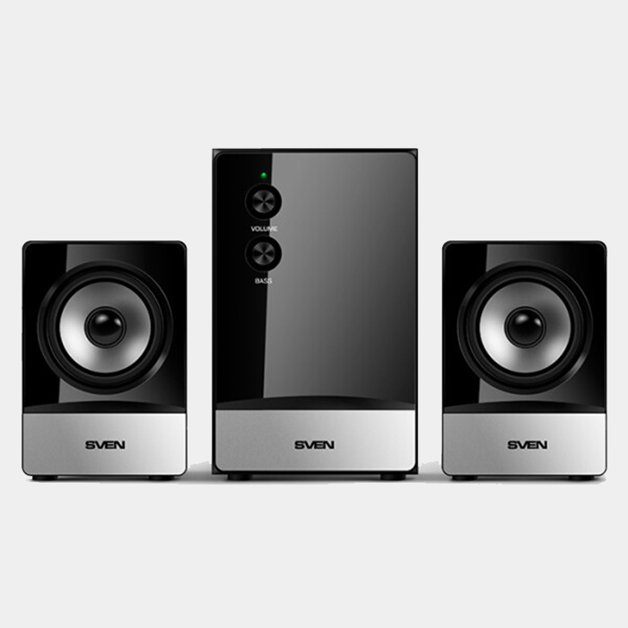

<!DOCTYPE html>
<html lang="ru">
    <meta name="viewport" http-equiv="Content-Type" content="width=device-width, initial-scale=1" charset="utf-8">
    <title>SVEN</title>
    <link rel="stylesheet" href="css/SvenAu.css">
    <link rel="stylesheet" href="css/all.css">
    <link rel="preconnect" href="https://fonts.googleapis.com">
    <link rel="preconnect" href="https://fonts.gstatic.com" crossorigin>
    <link href="https://fonts.googleapis.com/css2?family=Lora&family=Radio+Canada:wght@300;400&display=swap" rel="stylesheet">
</html>
<body>

    <nav  id="mainNav">
        <div class="layer2"></div>
        <div class="layer1">
            <ul id="navbar">
                <li><a href="main.html">Главная</a></li>
                <li><a href="Catalog.html">Каталог</a></li>
                <li><a href="Info.html">Информация</a></li>
                <li><a href="Contact.html">Контакты</a></li>
            </ul>
        </div>
    </nav>

    <header id="mainHeader" class="hea">
        <h1 > Акустическая система SVEN MS-90 </h1>
    </header>

    <article id="mainArticle">
            <div>
                <div class="layer3"></div>
                <div class="layer4">
                   <h2 align="left">Краткие характеристики:</h2>
                   <h3 align="left">Акустическое исполнение: 2.1; </h3> 
                   <h3 align="left">Общая выходная мощность: 10 Вт; Интерфейсы и порты: Линейный вход (стерео);</h3>
                </div>
                <div  id="cin"><h3>100 р.</h3> <a href="Order.html" >купить</a></div>
            </div>
    </article>

    <main id="mainMain">
        <h1>Внешний вид</h1>
        <div class="imgscale">
            
            
        </div>
        <h1>Описание</h1>
            <h4>Встроенный стабилизированный (импульсный) источник питания</h4>
            <h4>Акустическая система совместима с PC, DVD/Media-проигрывателями, мобильными устройствами и другими источниками звука</h4>
            <h4>Регулировка уровня общей громкости и уровня низких частот</h4>
            <p>Наличие отдельных регулировок уровня общей громкости и громкости сабвуфера позволяет настроить уровень низких частот по вкусу пользователя. Регуляторы громкости и баса расположены на передней панели корпуса – все настройки всегда под рукой.</p>
            <h4>Звук</h4>
            <p>Несмотря на миниатюрные размеры, SVEN MS-90 обладает неожиданно низким и глубоким басом благодаря использованию отдельного 5-ваттного сабвуфера. Насыщенный звук и хорошую детализацию обеспечивают 60-миллиметровые широкополосные динамики сателлитов.</p>
            <h4>Элегантная черная поверхность</h4>
            <h4>Материал корпуса сабвуфера – дерево (MDF)</h4>
    </main>

    <footer id="mainFooter" class="foooter">
        <div class="footer__content ">
            <div class="wid"></div>
            <div class="footer__social">
                <a href="AboutUS.html">О Нас</a>
                <a href="Contact.html">Контакты</a>
                <a href="https://vk.com/ia_prosto_hochy_pizzy" class="vka"></a>
                <a href="https://www.instagram.com/sebas.domashni" class="insta"></a>
            </div>
            <div class="wid"></div>
        </div>
    </footer>

</body>